The places that still glow: round 2 of 3
You ruled that the design guide will say "a ring in this app never glows". In round 1 you said no glow for all four places: the green seat ring, the bidding box, your own name's ring and the Tracker's rings. This round puts the next four to you, each as it is today beside the same thing with only its glow taken off. Nothing in the app has changed yet, and nothing will until you have approved the guide's wording in round 3.
These are real app pictures. The landing line was pictured during a real drag with the mouse. The switch at the bottom of the screen flips every picture between glow on (today) and glow off, in place; "Flip" switches it every second, so you see the difference without tapping. Glow off changes one style setting and nothing else. The dashed box in the "where" pictures is drawn in to show the place; it is not part of the app. Tap any picture to see it full size.
Question 5 · Edit Schedule and View-only Sched
Today's day card on the week
Today's card on the week has a blue edge, and a soft blue light falls below it. The blue edge already says "today". Without the light, the edge stays exactly as it is.
Today · phone (the card's foot)
No glow · phone
Today · desktop
No glow · desktop
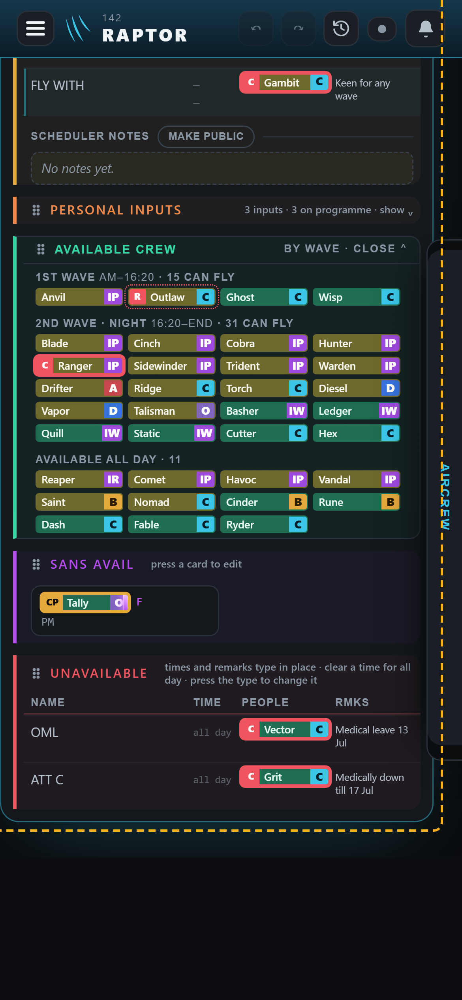
Where · phone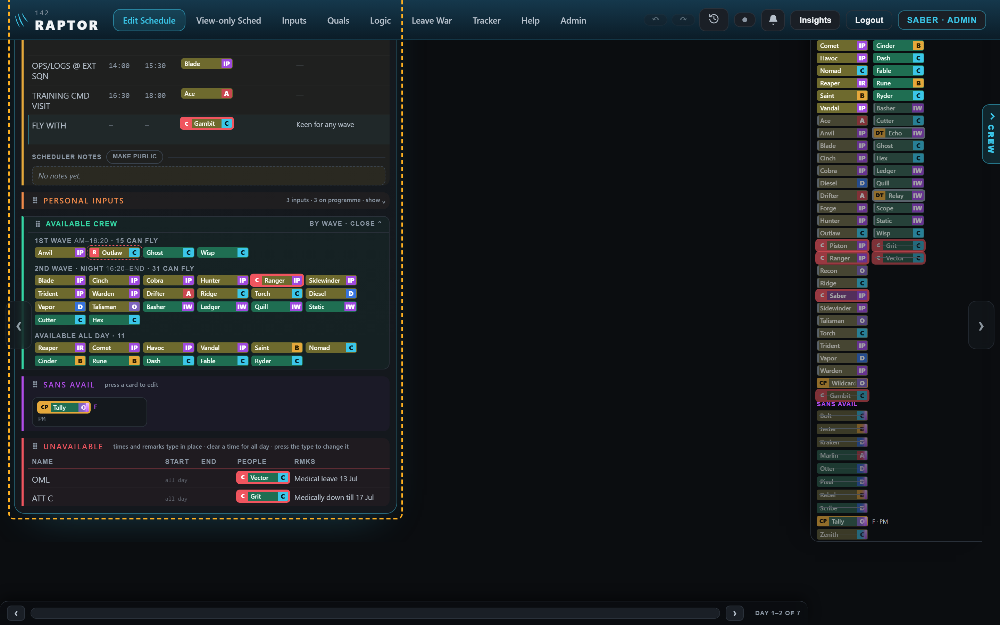
Where · desktopTake the light off under today's card? My pick: yes. The blue edge says "today" on its own.
Question 6 · Leave War
The Rearrange button while it is on
While you rearrange the roster, the Rearrange button turns blue, with a pale blue halo and a blue light round it. The "Show SANS" switch in the Leave War's settings uses the same look when it is on, so it would change too. Without the halo and light, the button keeps its blue edge and blue words.
Today · phone
No glow · phone
Today · desktop
No glow · desktop
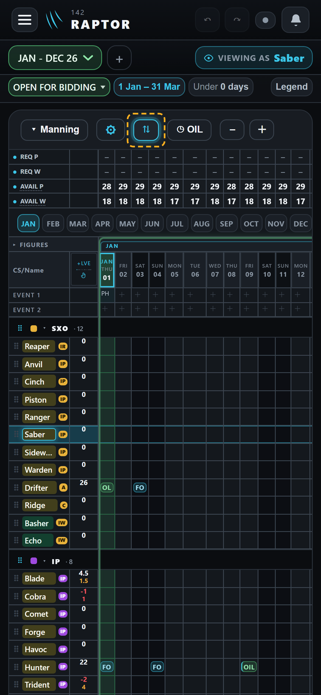
Where · phone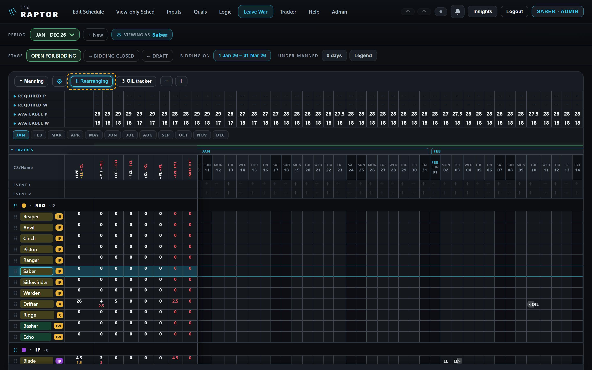
Where · desktopTake the halo and light off the Rearrange button (and the Show SANS switch) while on? My pick: yes. The blue edge and words already show it is on.
Question 7 · the schedule and the SANS calendar
A SANS puck's purple stripe
A SANS man's puck has a purple stripe down its right end, with a purple light round the stripe. It is a stripe, not a ring, so the rule as worded would not cover it. You can hardly see the light at normal size; tap a picture to look closer. The stripe stays either way.
Today · phone
No glow · phone
Today · desktop
No glow · desktop
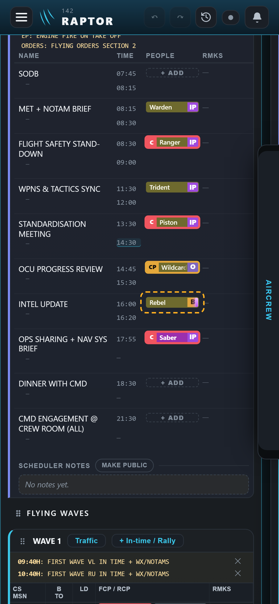
Where · phone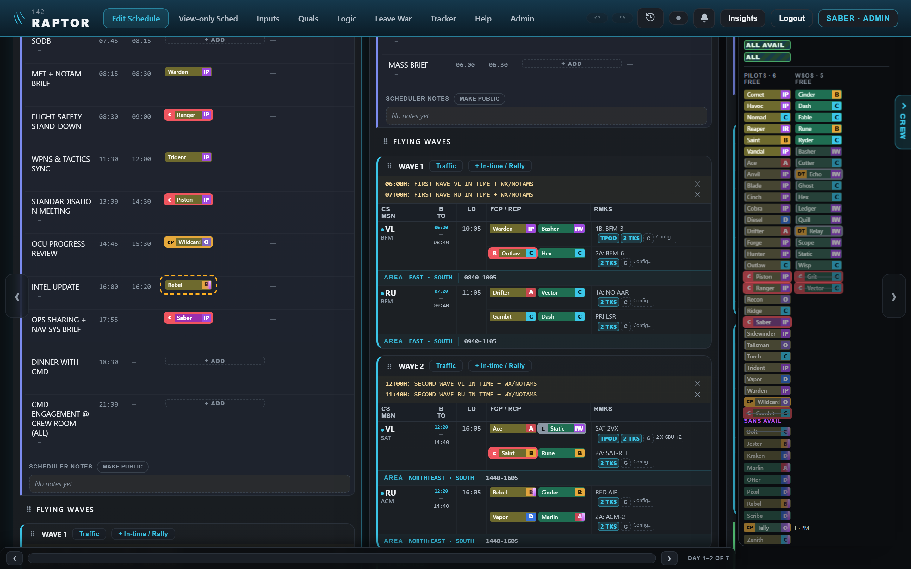
Where · desktopTake the light off a SANS puck's stripe? My pick: yes. It is barely visible, and the guide can then say plainly that nothing in the app glows.
Question 8 · Leave War
The blue landing line while a row is dragged
In Rearrange, while you drag a man's row (here Cinch, over Warden), a blue line shows where he will land. On the name column the line has a soft blue light above it; across the days it has none. Without the light, the line looks the same along the whole row.
Today · desktop, mid-drag
No glow · desktop
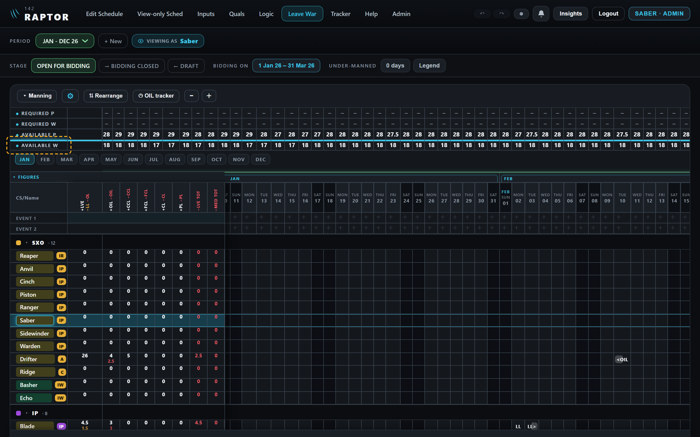
Where · desktopAlso seen in this picture, and not part of the question: the line breaks across the figures columns between the names and the days. I have filed it as a small fault to fix on its own.
Take the light off the landing line on the name column? My pick: yes. One line with one look, across the whole row.
Round 1: answered, no glow for all four
Question 1 · Edit Schedule
The green "he can take this seat" ring
Pick a man's puck on Edit Schedule, and every empty seat he could take gets a solid green ring with a soft green light around it. It was your approved look on 13 Aug. Without the light, the solid green ring stays exactly as it is.
Today · phone
No glow · phone
Today · desktop
No glow · desktop
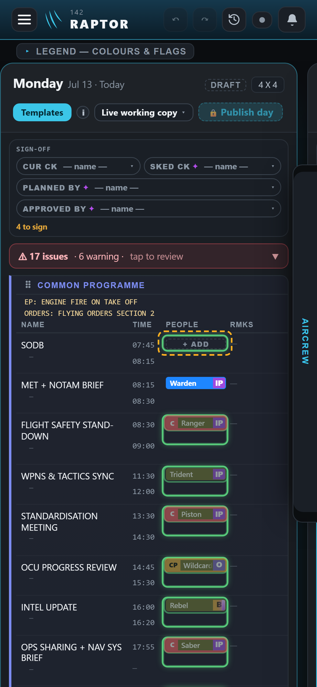
Where · phone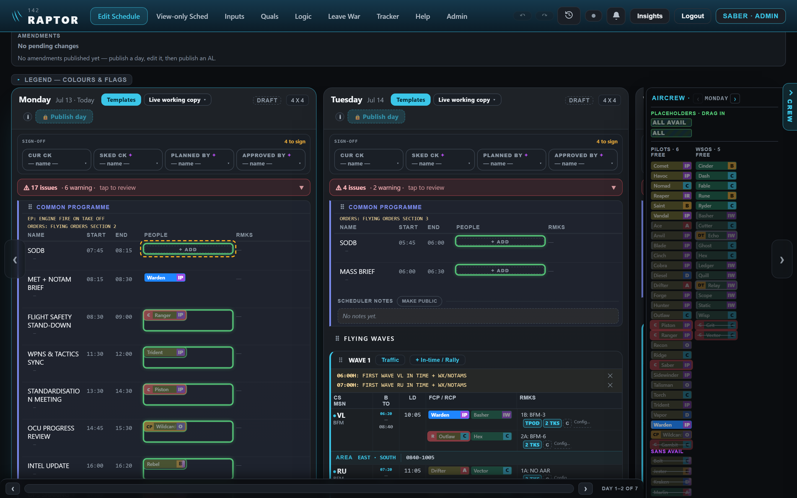
Where · desktopTake the glow off the green "can take this seat" ring? My pick: yes. The green ring alone already says it, and it would then match the board's other rings, which lost their glow today.
Question 2 · Leave War
The green box round the days open for bidding
While a bidding window is open, the Leave War draws a deep green box round its days, with a faint green light spreading out from the line. It was your pick on 1 Sep. The box is taller and wider than the screen, so the close-ups show its top edge under the month buttons. On the desktop the light also leaks left over the name columns as a faint green line, where the box itself is hidden.
Today · phone
No glow · phone
Today · desktop (see the faint line over the columns at the left)
No glow · desktop
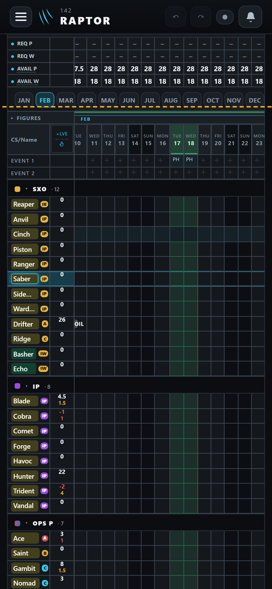
Where · phone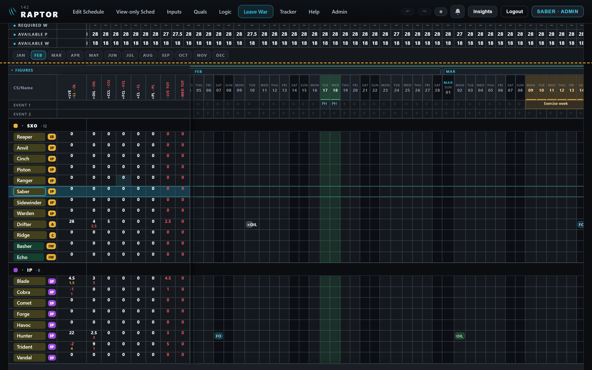
Where · desktopTake the glow off the open-bidding box? My pick: yes. The deep green line keeps its colour and width, and the stray line over the name columns goes with the glow.
Question 3 · Leave War
"This row is you": the ring on your own name
On the Leave War your own row's name wears a thin blue ring with a blue light past it. It means the same as your own puck on the schedule ("this is you"), whose glow you took off today.
Today · phone
No glow · phone
Today · desktop
No glow · desktop
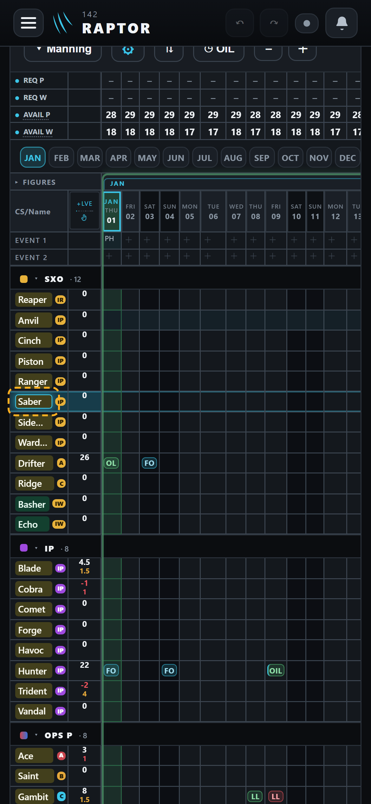
Where · phone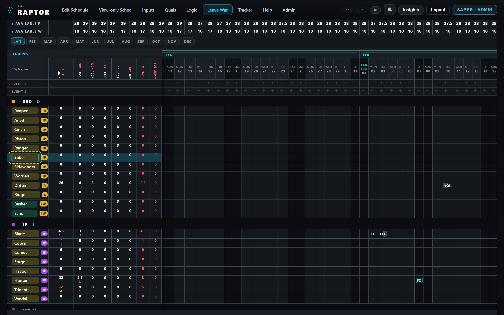
Where · desktopTake the glow off your own row's ring on the Leave War? My pick: yes. It is the same mark as your own puck, so it should look the same. The row's blue band stays.
Question 4 · Tracker
The Tracker's gold and turquoise rings
On a chart, a gold ring sits round every event the student can fly next, and a turquoise ring round the event a search found. Both glow. The glow was added to tell the search ring from the blue ring an event wears while the chart is edited. Without it they still differ: turquoise is not the edit blue, and the search ring sits further out. The chart already drops the glow while it is moved or zoomed, so you have seen the plain look before.
Today · desktop, after a search for ST-01
No glow · desktop
Today · phone, gold rings
No glow · phone
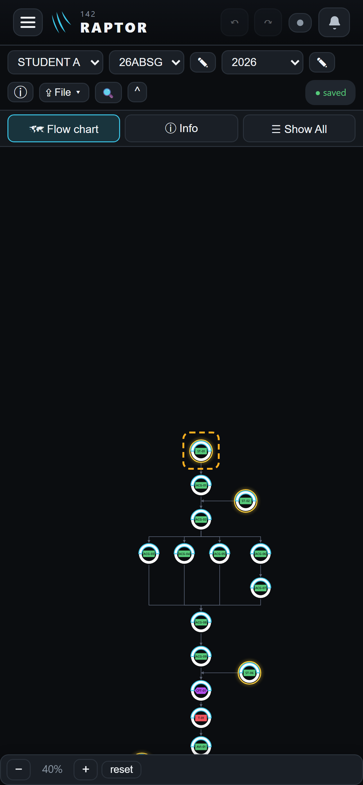
Where · phone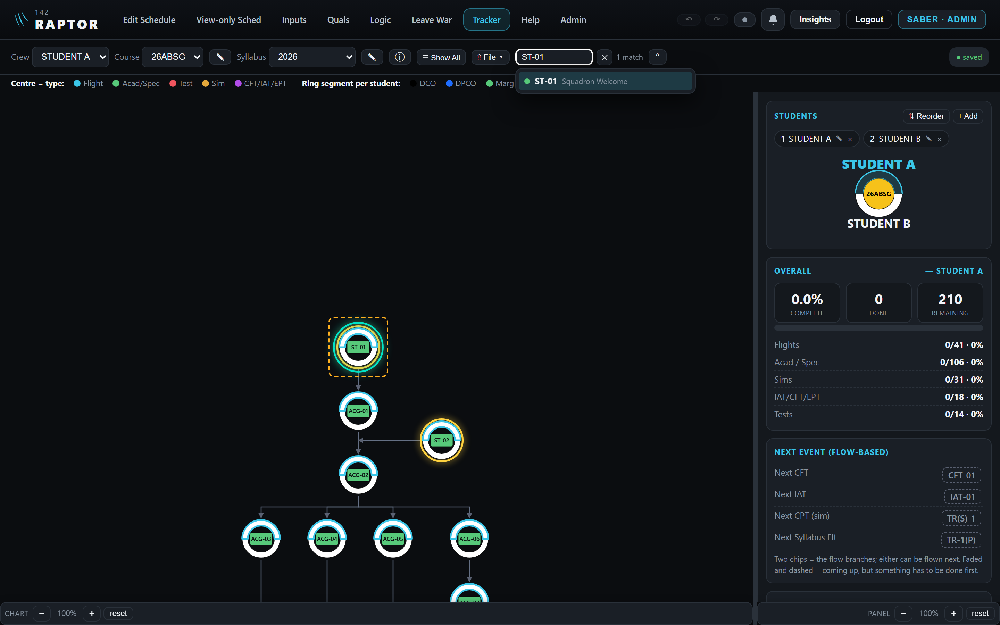
Where · desktopTake the glow off the Tracker's gold and turquoise rings? My pick: yes. A chart can show dozens of gold rings at once, and without the light each one reads as a clean line.
Round 3
Still to come
- Round 3: the guide's wording itself, set to your answers.
- The ninth place needs no answer. The Inputs page's old "Calendar" button had a glow, but that button was replaced when the calendar was rebuilt, and nothing on screen uses its style any more. I will remove the leftover style with the guide change. Nothing you can see changes.